Distribución de Entrevistas de Apoyo por Candidato
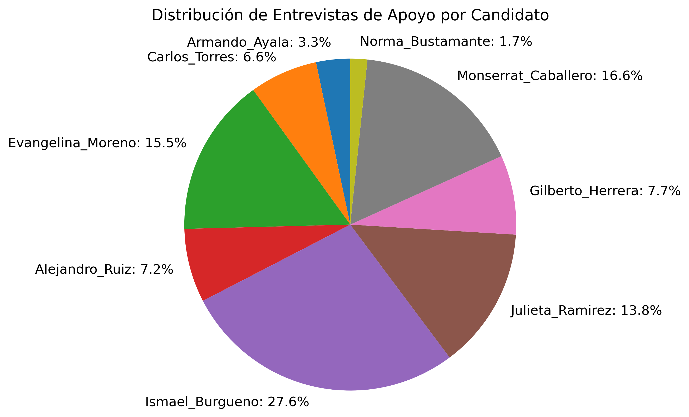
Distribución de Entrevistas de Rechazo por Candidato
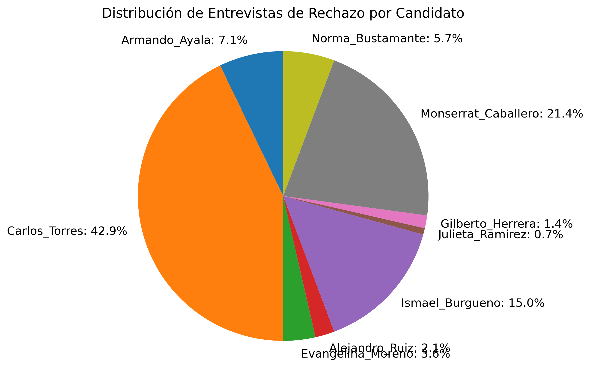
Distribución de Entrevistas Netas por Candidato
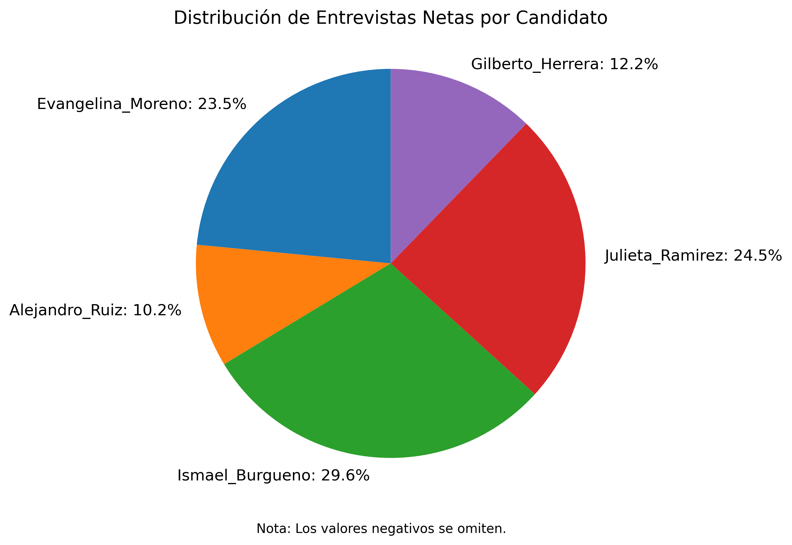
Distribución de Apoyo Ponderado por Candidato
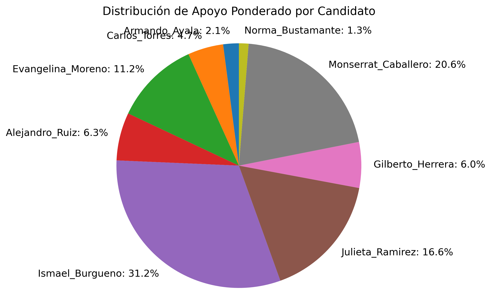
Distribución de Rechazo Ponderado por Candidato
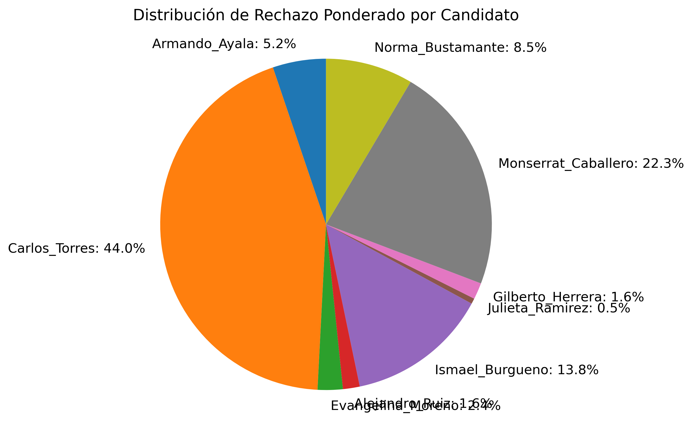
Distribución de Apoyo Ponderado Neto por Candidato
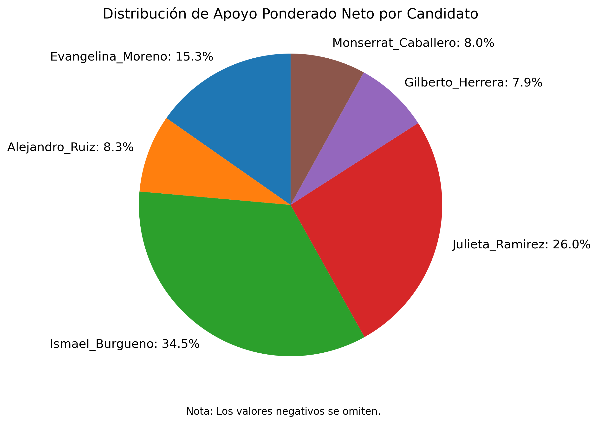
Distribución de Secciones Únicas de Apoyo por Candidato
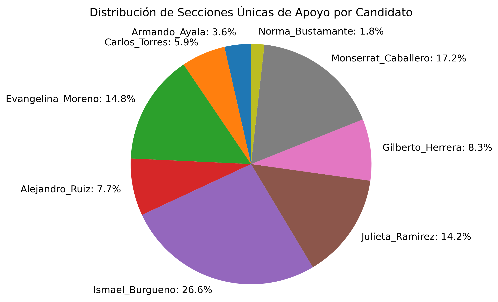
Distribución de Secciones Únicas de Rechazo por Candidato
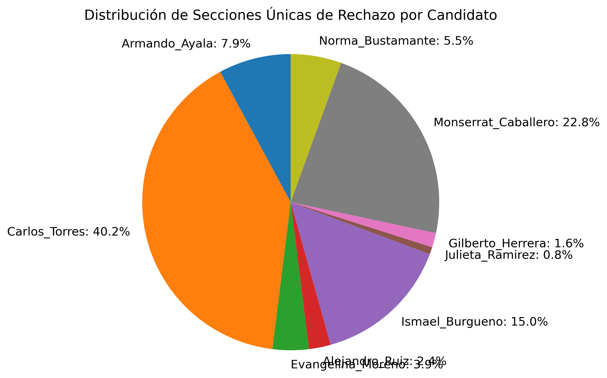
Entrevistas: Empty Voto/Ninguno vs Todos los Candidatos
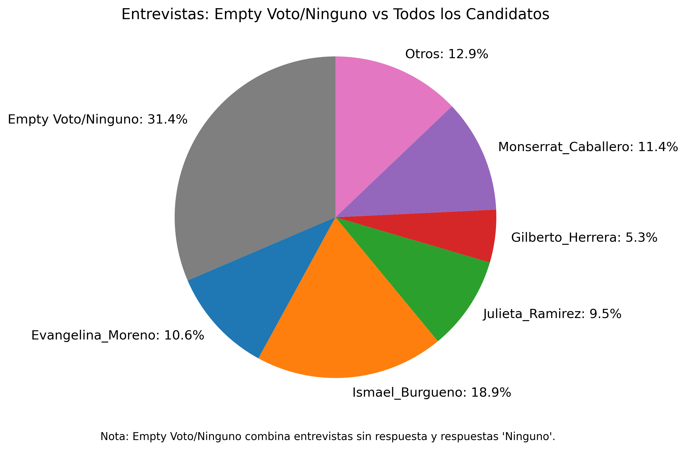
Apoyo Ponderado: Empty Voto/Ninguno vs Todos los Candidatos
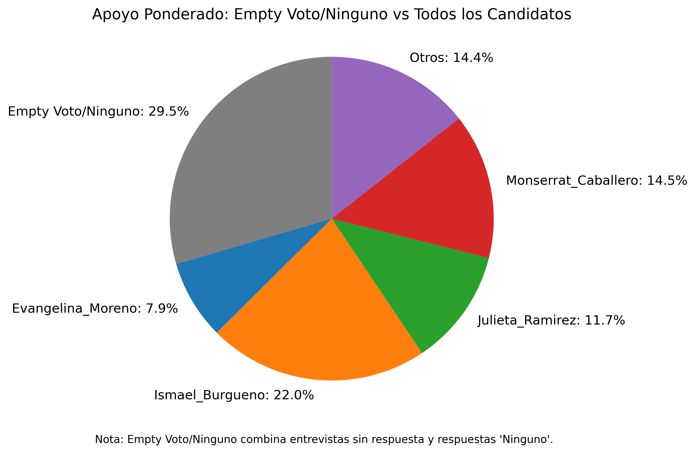
Entrevistas Netas: Empty Voto/Ninguno vs Candidatos
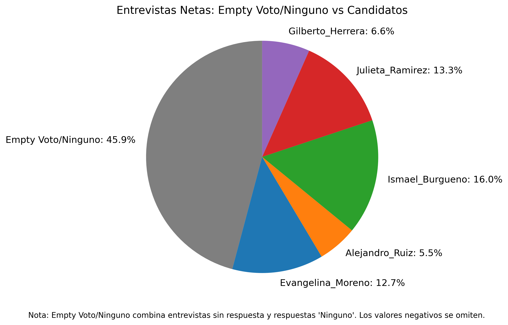
Apoyo Ponderado Neto: Empty Voto/Ninguno vs Candidatos
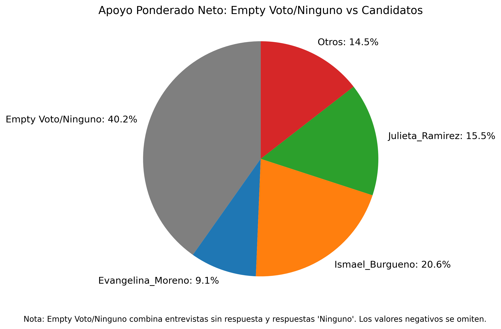